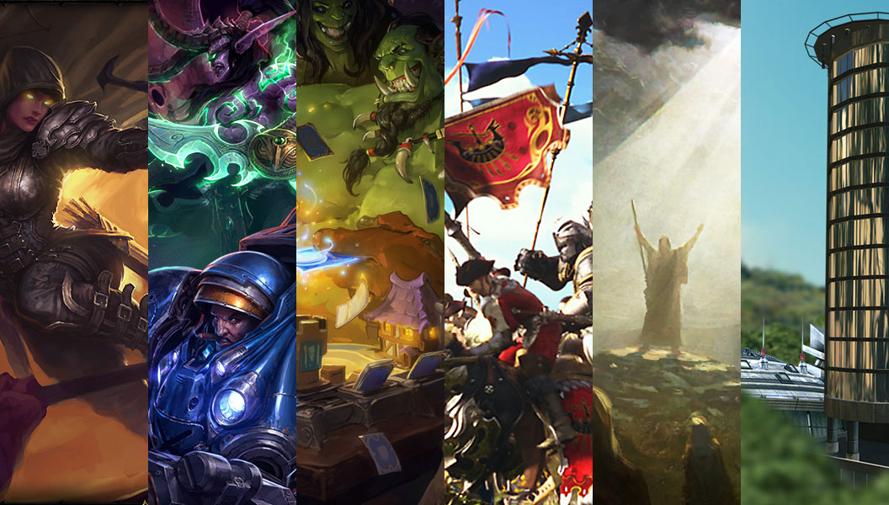

Rob McLarty
I love making things, especially websites. Outside the web I do a lot of drawing, writing, photo-ing, and gaming.
I'm currently a senior, full-stack, developer at Myplanet where I make JS web apps and services mostly on AWS using clustered Docker containers.
I blog here and tweet from @robmclarty and receive email from r@robmclarty.com.
I share my code on Github, my knowledge on Stack Exchange, and my credentials on SO Careers.
I believe in using data responsibly and building systems that uphold trust, respecting users; not taking advantage. This is my public key.
I Make Websites
Check out my portfolio of recent professional projects.
I come from a multidiciplinary background (art, comp sci, cog sci, philosophy, design). I think of myself as more of a generalist than a specialist (although I mostly use JS and Ruby). I've worked at a number of agencies and startups, and founded Philosophy Factory Inc (now closed).
These are a few of my favourite web projects:
I Draw Things
You can see some of my selected illustrations here.
I've always felt a natural compulsion to draw and paint things. I love expressing myself and feeling others' expressions in visual form. I like the interplay of an artist's emotional outpouring into a physical artifact from which viewers may participate in a shared creative experience.
I Write Stuff
When I'm not drawing, or playing with my computers, I'm reading and writing. I blog here and I write essays and bad poetry here.
I read a lot of books. I only buy ebooks now to help the environment (but mainly to reduce the weight of the boxes I have to move around). I'm mainly interested in different philosophies, dreaming about fantastic worlds in space, or just contributing to the absurdity of life.
I Take Pictures
I've always been fascinated by the lens of time, gazing at moments from before I existed and seeing people, places, and moments as if I was there looking at them.
I post some of my pictures on Flickr.
I Play a lot of Games
Video games are one of my favourite artistic mediums because of their broader expressiveness through the assemblage of multiple media working in unison which delivers the most immersive experience (read: closest to the artist's imagination). In Game Land, people call me "Slode".

I'm currently playing: